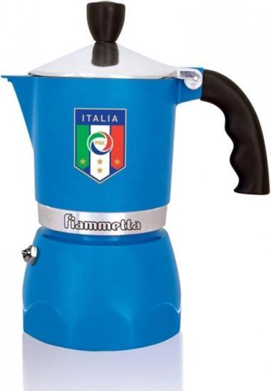

Onze favorieten
Deze drie percolators bevelen we in 2025 het vaakst aan – voor de meeste situaties is één van deze drie de juiste keuze.

Bialetti Fiammetta
3-kops aluminium – perfecte balans tussen prijs, kwaliteit en gebruiksgemak.
- Ideaal voor 1–2 personen op gas/elektrisch.
- Consistente, volle mokkakoffie.
- Onze #1 aanrader voor dagelijks gebruik.

Bialetti Venus
4-kops RVS – modern design, geschikt voor alle kookplaten inclusief inductie.
- Werkt op inductie én andere kookplaten.
- Stevige RVS-constructie, makkelijk schoon te maken.
- Beste keuze als je maar één RVS-model wilt.

Alessi Pulcina
3-kops aluminium – designicoon met uitstekende koffie, voor wie ook het oog wil verwennen.
- Award-winnend design door Michele De Lucchi.
- Perfect als opvallend stuk op het aanrecht.
- Zelfde koffiekwaliteit als goedkopere modellen.